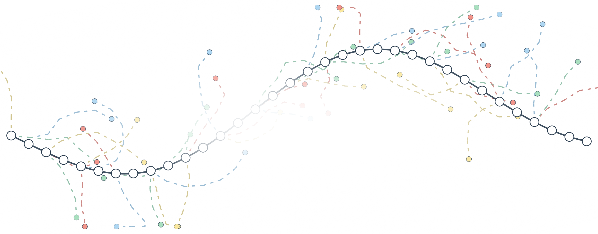
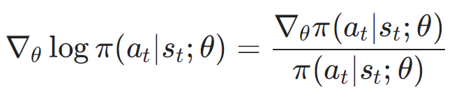
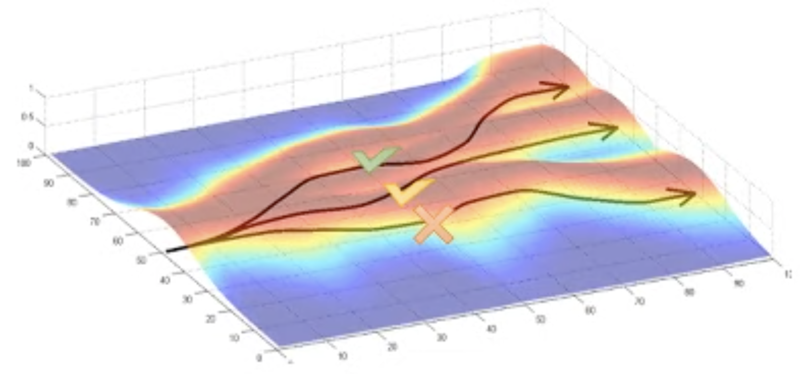
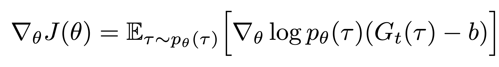
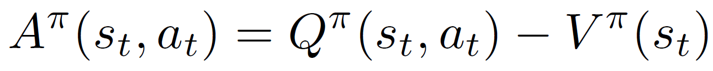
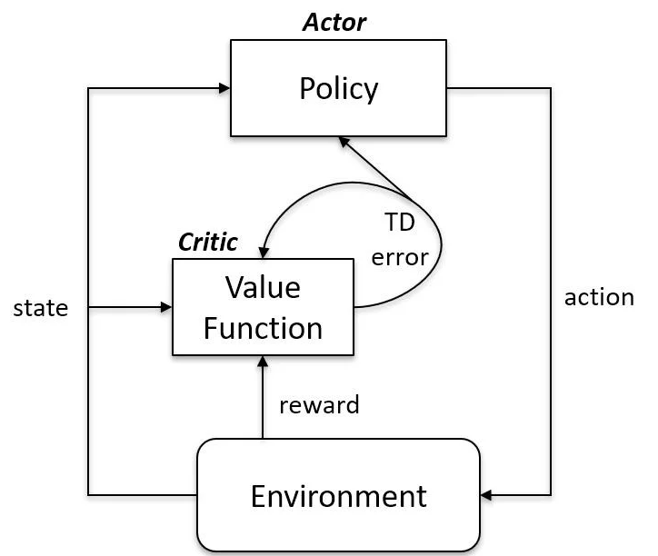

Reinforcement Learning · Lecture 8
Model-Based Reinforcement Learning

Rafael Fernandes Cunha
Policy-Gradient Theorem


![\begin{align*}
\boldsymbol{\theta}^* = \underset{\boldsymbol{\theta}}{\arg \max}\mathbb{E}_{\tau \sim p_{\boldsymbol{\theta}}(\tau)}[G(\tau)]
\end{align*}](media/2f958c01b3.png)
Goal: Find

The update is
directly proportional to the return of the trajectory
inversely proportional to the policy

The gradient
rises the log probabilities of the good trajectories
lowers the log probabilities of the bad trajectories

Reducing the variance: Baseline


Without Baseline

With Baseline

All positive
Subtracting a baseline independent from the action.

If is , this choice of baselines motivates the Actor-Critic family of algorithms.
Learn the value function via:
MC -> REINFORCE with baseline
TD-learning -> Actor-Critic

Actor-Critic algorithms

A policy that controls
how our agent acts.
A value function that
measures how good
is the action taken.
Value-Based
Policy-Based
DQN
REINFORCE
Actor-Critic
A2C
Critic
Actor

Policy gradient step
Return
REINFORCE
Estimate the relative improvement of
action at state . Low variance.
![\begin{align*}
\textit{Actor-Critic:}\quad \nabla_\theta J(\pi_\theta) &= \mathbb{E}_t\big[A_t^{\pi}\nabla_\theta \log \pi_\theta(a_t \mid s_t)\big] \\ \textit{REINFORCE:}\quad \nabla_\theta J(\pi_\theta) &= \mathbb{E}_t\big[R_t(\tau)\nabla_\theta \log \pi_\theta(a_t \mid s_t)\big]
\end{align*}](media/074b1ed676.png)
A2C
Advantage
Learns parametrized policy .
Block Diagram of A2C algorithm


Time Difference (TD) error
Recall the advantage function

Mnih, Volodymyr, et al. "Asynchronous methods for deep reinforcement learning." International conference on machine learning. PMLR, 2016.
Agent


Policy gradient algorithms (REINFORCE)
•Suitable for continuous state and action space.
•High variance.
Value based algorithms
•Not suitable for continuous action space.
Summary on policy gradient algorithms
Actor-Critic algorithm
•Suitable for continuous state and action space.
•Low variance.

Example: Batch Learning in Two States

1)A, 0, B, 0
2)B, 1
3)B, 1
4)B, 1
5)B, 1
6)B, 1
7)B, 1
8)B, 0
This is a model!
Monte-Carlo: v(A)=0, v(B)=3/4
Simulated experience
1)B, 1
2)B, 0
3)B, 1
4)A, 0, B, 1
5)B, 1
6)A, 0, B, 1
7)B, 1
8)B, 0
Monte-Carlo: v(A)=1, v(B)=3/4
Real experience
Combined
Monte-Carlo: v(A)=2/3, v(B)=3/4